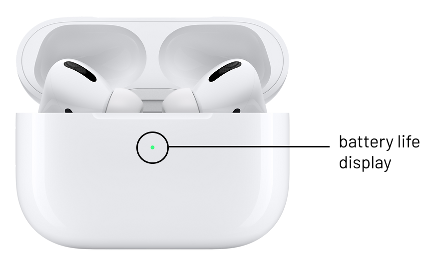
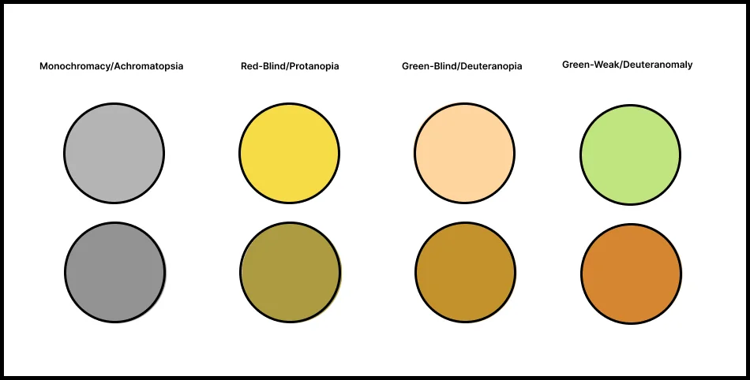
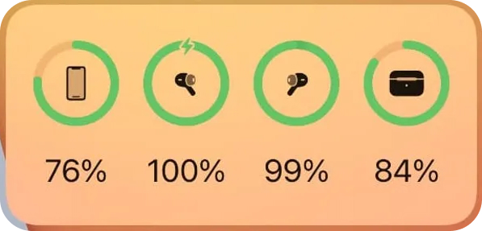
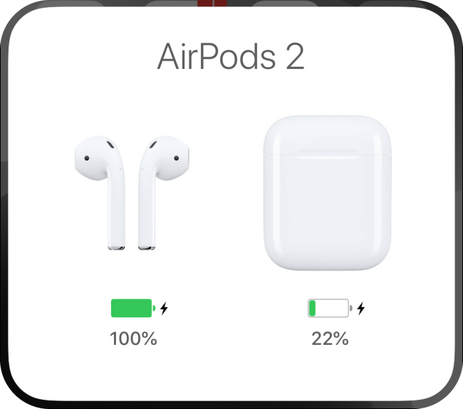
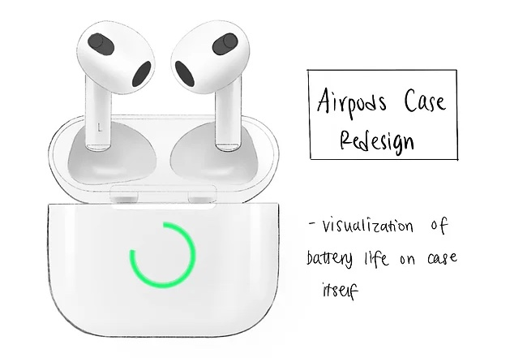
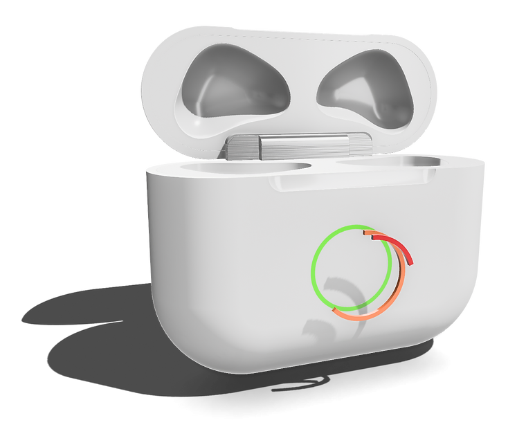

Apple's Current Design

Pain Points
- Detailed battery life is not shown
- only displayed in green and amber dots
- inconvenient to check battery life,
user has to open smart device in order to view
- Small colored light is not accessible for sight or
color challenged individuals

A few types of color blindness and what
the user may see on the case's battery display
Other methods available to users:

Iphone Widget:
- Pros: easy to understand and offers clear information
- Cons: many steps that users have to take to get there
Steps taken to view widget:
- Pick up device
- Unlock device
- Swipe to the page that contains the widget

Pop-up
- Pros: easy to understand and offers clear information
- Cons: several steps, sometimes pop-up will not
appear if the user misses a step
Steps taken to view pop-up:
- Put airpods back into case
- Close the lid
- Move the case near device
- Open case
- Wait…
- Battery level is displayed
How can I design something that indicates battery life in an
accessible way but is also compliant with Apple’s aesthetics?
Ideation
- Apply pros of Apple's existing design
- Minimize steps taken to check battery life
- Display should accommodate sight/color challenged individuals

- Apply pros of Apple's existing design
- Minimize steps taken to check battery life
- Display should accommodate sight/color challenged individuals
How it works:
-
Depending on battery percentage, the ring display will
shorten and change in color from green to red
Steps:
- open battery case
3d Model

Made in Shapr3D
 @aproduct.aday
@aproduct.aday